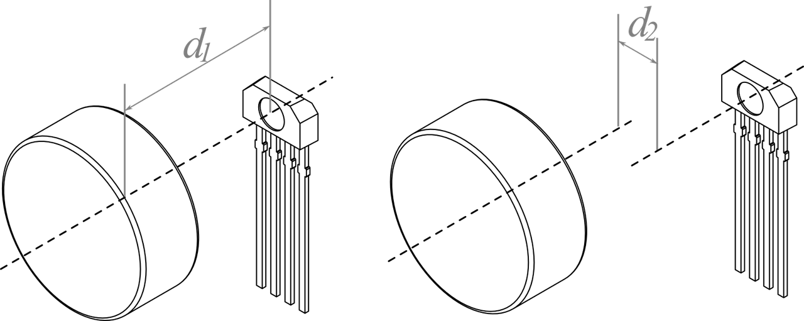
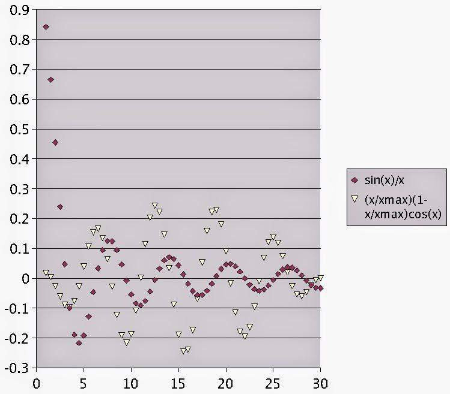
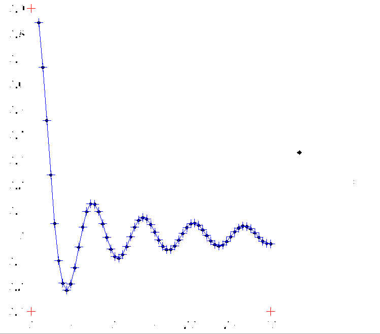

Herramientas (auxiliares) para Investigación
En esta entrada quiero hablar de algunas herramientas (...o algo así) que son útiles en el día a día de la investigación, pero que no suelen ser tan populares por ser en cierta forma tangenciales al área específica en la que cada uno trabaja.
Scripting
Un script es un programa usualmente simple que realiza una serie de tareas. ¡Lo siento! trato de ceñirme al castellano pero no me gustan las traducciones para este término (archivo de órdenes, archivo de procesamiento por lotes o guion). Si existe una tarea que debe ser hecha más de... cinco veces (el número varía de acuerdo a la paciencia), entonces creo que es algo que podemos pedirle al computador que haga esta tarea por nosotros. En otras palabras: podemos automatizar ese trabajo. Algunas tareas que pueden ser una buena alternativa para automatizar son: renombrar 100 archivos, convertir un archivo de un formato a otro (p. ej., STL a OBJ), leer 387 archivos con información sobre el clima y graficar su evolución temporal (temperatura mínima, máxima y promedio). Estas tareas pueden ser fáciles de hacer a mano, pero por la cantidad de trabajo que involucran son tediosas.
Lo primero es hacernos con un lenguaje de scripting. Algunas opciones son Python, Bash, Julia, Matlab/Octave, Scilab. Dejándome llevar por el sesgo, recomiendo usar Python.
Gráficos y esquemas
Una imagen vale más que mil palabras, o eso dice el dicho. Personalmente, me parece absolutamente cierto y trato de hacer dibujitos para poder entender mejor algo o lograrlo explicar mejor. Lo primero que me gustaría mencionar es la diferencia entre imágenes de mapas de bits (o ráster) e imágenes vectoriales.
Imagen de mapa de bits: es una imagen que está representada por un arreglo (o rejilla rectangular) de pixeles. Dicho de otro modo, se almacena la información de color que hay en cada punto de la imagen. Los formatos más populares almacenan la información comprimida. Para gráficos con alto contraste (como esquemas o diagramas) el mejor formato es PNG. Si se tiene una animación, GIF sería preferible. Y para el caso de fotografías es mejor utilizar JPG.
Imagen vectorial: es una imagen que está formada por entidades geométricas. En esta no se almacena la información punto a punto sino la construcción de las formas que la constituyen. Por esta razón, estas imágenes no se pixelan pues la información que se tiene es de cómo construirla. Este tipo de imágenes es la mejor opciones para esquemas y diagramas, pues sólo se almacena la información de los trazos y texto que se añadan en ellas (ver Figura 1). El estándar de facto para este tipo de imágenes es PDF —es el que suelo para incluir en mis documentos \(\LaTeX\), aunque existe forma de embeber SVG en \(\LaTeX\) pero es algo que aún no exploro—. A pesar de que PDF sea el estándar, el formato a preferir es SVG (Scalable Vector Graphics) que es un estándar a través de la internet y la mayoría de navegadores modernos permiten visualizar.
Recapitulando, deberíamos usar imágenes JPG para fotografías y SVG para esquemas/diagramas. Otro atributo que puede ser de utilidad es el manejo de capas, SVG permite esto.... y de formatos ráster tenemos la opción de usar TIFF.
En cuanto a software para generar/editar este tipo de imágenes debo decir que existen gran cantidad de programas que permiten exportar a estos formatos: Python/Matplotlib, Matlab, Inkscape, Adobe Illustrator, GIMP, Photoshop, LibreOffice. Si el gráfico es generado a partir de un cálculo o de una serie de datos yo uso Matplotlib. Si en cambio, queremos hacer un esquema o —como suelo decir— un muñeco mi herramienta favorita es Inkscape. Este programa pretende ser una alternativa libre a programas como Adobe Illustrator —y sí que lo consigue. Obviamente, se podría usar Illustrator o Corel Draw para esta tarea. Si el único uso sería hacer esquemas técnico, creo que sería un desperdicio.
|  |
Figura 1. Esquema de sensado de campo magnético de imanes permanentes por efecto Hall. Sacado de mi trabajo de grado de Ingeniería Física. |
Tomar notas
Supongo que para algunos parecería un poco trivial hablar de "tomar notas" y mucho más viniendo de alguien que no tenía cuadernos en el bachillerato, pero como soy un poco terco creo que igual escribiré un poco sobre esto. Lo primero que me gustaría mencionar es que recuerdo que me hablaran de este tema en el colegio, pero nunca hubo nada formal respecto a desarrollar estas habilidades. Buscando en la web, hay gran cantidad de información. Incluso el artículo de Wikipedia en inglés es interesante. No hay nada mejor para escribir que tener una pluma y un papel de buen gramaje, por eso es que aún uso un cuaderno en donde llevo cuenta de lo que hago en mi investigación y tomo notas. Sin embargo, este esquema es bastante lineal y deja por fuera oportunidades más contemporáneas. Es decir ¿por qué conformarse con un documento en este tiempo de hiper-documentos? Las ventajas de tomar notas digitalmente saltan a la vista, en un hiper-documento se pueden tener enlaces, embeber imágenes, video y sonido.
En cuanto a herramientas, acá incluyo una pequeña lista:
Evernote es probablemente la herramienta más popular para tomar notas. Es multiplataforma, Freemium (funcionalidad básica gratuita y avanzada paga), y cuenta con muchas opciones. Yo la uso, pero no mucho en mi investigación.
Zim es una wiki offline. Tiene gran cantidad de opciones como calendario, ecuaciones con código \(\LaTeX\), imágenes... en fin. El pero que le encuentro es que no he logrado configurar las ecuaciones en Windows (y en mi oficina debo usar Windows :-/).
Docear esta es una herramienta pensada, principalmente, para manejar bibliografía. Sin embargo, permite tomar notas y, en general, manejar la información de la investigación. La característica más (o menos) atractiva es que funciona alrededor de mapas mentales.
Zotero también es una herramienta para manejar bibliografía, aunque permite manejar algo de toma de notas (al menos alrededor de la bibliografía).
Mendeley es muy parecido al anterior, aunque con más funcionalidades. El pero más grande que le encuentro es que en 2013 fue comprado por Elsevier.
En cuanto a manejo de bibliografía también me gustaría mencionar EndNote que es el programa con mayor trayectoria y JabRef que es el que he usado por más tiempo. Algunas referencias interesantes comparando manejadores de bibliografía están acá: [A] [B] [C].
Reconstrucción de gráficos
Es común encontrarse con información presentada en forma de gráficos. También es común que queramos tener los datos numéricos de estos gráficos para poder compararlos con los nuestros. Para saber si nuestras medidas/simulaciones/métodos dan resultados similares a otros presentados en la literatura. Para esta tarea se pueden usar potentes software de procesamiento de imágenes, u otros más modestos diseñados específicamente para este fin.
|  |
Figura 2. Gráfico original. |
|  |
Figura 3. Gráfico procesado en Engauge Digitizer. Algunos puntos fueron seleccionados (automáticamente) para obtener sus coordenadas. |
Digitizer of XY chart este es un plugin para Libreoffice/OpenOffice y exporta el resultado a la hoja de cálculo actual, es simple y fácil de usar.
Engauge Digitizer, es el que normalmente uso cuando necesito hacer esta tarea (ver Figuras XX). Es de código abierto (y libre) y tiene una buena cantidad de opciones para facilitar la tarea.
Plot Digitizer no tengo mucha información sobre este (pues nunca lo he usado), salvo que está escrito en Java.
ImageJ este es un (completo) programa de procesamiento de imágenes que está escrito en Java. No lo he usado para esta tarea de manera regular, pero podría usarse para ello.
Visualización científica
La visualización científica que se encarga de generar gráficos que permitan visualizar "datos científicos" para facilitar el entendimiento que hay detrás de los datos. Para esta labor muchos hemos usado lenguajes de scripting como Matlab/Octave, Scilab o Python (con Matplotlib o Mayavi). Sin embargo, como la visualización se trata de algo visual —¿como si no?—, es bueno contar con una herramienta que permita generar y cambiar los gráficos de manera interactiva, aunque siempre debemos automatizar la mayor cantidad de trabajo posible (la pereza siempre ha sido uno de los móviles más grandes de la humanidad, hay que aceptarlo).
MayaVi, este es un programa escrito en Python que usa VTK. Es una herramienta muy versátil y la gran ventaja que tiene es que puede usarse dentro de scripts de Python.
Paraview, este programa también está basado en VTK y permite paralelizar las labores (para los computadores con múltiple núcleo y los clústers). Abajo incluyo un video generado en Paraview para mostrar sus capacidades.
Visit, este programa también está basado en VTK, nunca lo he usado pero quise incluirlo porque la gente dice que puede ser más intuitivo que Paraview.
Tecplot, este programa es muy popular en Purdue. Creo que inicialmente fue pensado para CFD, pero se ha expandido mucho. En cuanto a gráficos 3D no me parece mejor que ParaView, sin embargo, las capacidades de gráficos 2D (gráficos XY, y demás) lo hacen atractivo.
Scavis, este está escrito en Java. No lo conocía hasta que inicie la escritura de esta entrada pero me llamó la atención y quise incluirlo en la lista. Algo que me llamó la atención es que permite scripting en varios lenguajes: Java, Python, Ruby, BeanShell y Matlab/Octave.
Origin, nunca lo he usado pero no lo quise dejar por fuera porque siempre he oído hablar maravillas de él (probablemente compárandolo con Excel... pero no puedo opinar).
Manejo de versiones
El manejo de versiones es la administración de cambios en documentos, código fuente y otro tipo de información. Esto puede hacerse de forma manual, pero es fácil cometer errores o remplazar la versión de un código fácilmente, y por esto es recomendable usar un software que facilite el trabajo. La idea es tener un lugar (repositorio) en donde se almacenan las versiones y los cambios, y llevar un registro de estos. De esta forma se puede volver a una versión anterior de los documentos y varias personas pueden trabajar conjuntamente. Existen dos paradigmas (o arquitecturas) para el manejo de versiones: centralizada y distribuida. En la primera existe un repositorio centralizado en donde se encuentra toda la información. En la arquitectura distribuida cada usuario tiene una copia del respositorio. Personalmente sólo he usado Git, que entra en la categoría distribuida y es uno de los software de manejo de versiones más populares actualmente; lo usan compañías como Google, Facebook y Netflix.
Un ejemplo puede verse en este repositorio, en donde está el documento de trabajo de grado de Santiago Echeverri, el cual tuve la oportunidad de asesorar. Este documento lo editamos conjuntamente mientras él estaba en Medellín y yo me encontraba en Estados Unidos. El documento se hizo en el lenguaje de marcadores \(\LaTeX\).
Además de tener un control sobre las versiones y poder acceder a versiones anteriores, es útil poder almacenar la información en un lugar accesible desde cualquier lugar del mundo con una conexión a internet. Esto puede lograrse con un servidor propio, obviamente, o también a través de un proveedor externo. Dos proyectos que son muy populares para alojar repositorios y manejar sus versiones son (comparación entre Github y BitBucket):
Github es el más popular en este momento. Permite tener proyectos con un número ilimitado de colaboradores. Para tener un repositorio privado es necesario pagar.
BitBucket tiene como principal ventaja que permite tener repositorios privados sin la necesidad de pagar. Sólo es gratuito para proyectos con 5 colaboradores o menos (o para proyectos académicos).
Enlaces sugeridos
Software Carpentry. http://software-carpentry.org/
Python Scientific Lecture Notes. https://scipy-lectures.github.io/
Seguro dejé mucho temas por fuera así como herramientas dentro de algún tópico. Si ese es el caso, agradecería que me lo digan en los comentarios.
Comentarios
Comments powered by Disqus